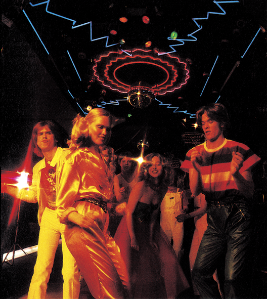
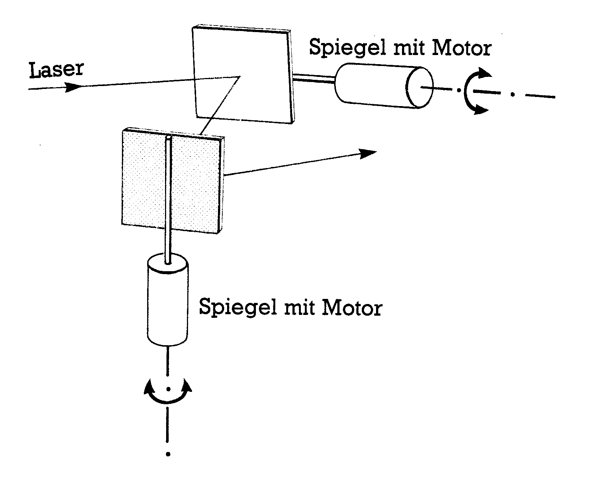
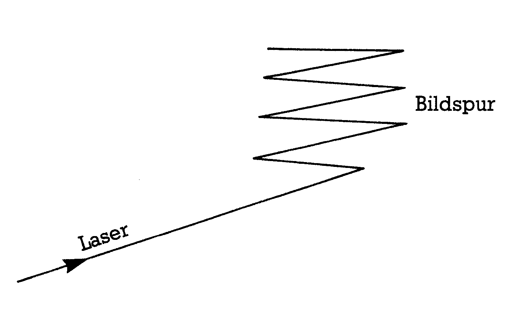
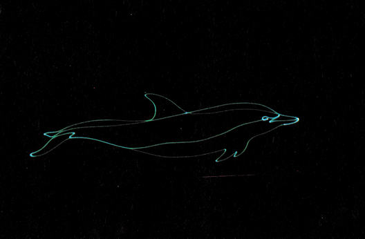
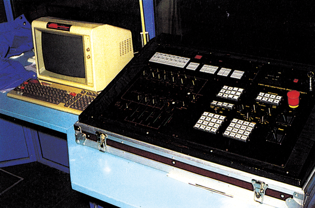

Die Zeit bleibt auch in der Diskothek nicht stehen
Wie in allen anderen Bereichen unseres Lebens, so hält auch die Computertechnik ihren Einzug in die Disko. Laser-Light-Show ist ein wichtiger Aspekt der jungen Generation bei der Auswahl Ihrer Stammdisko, ebenso wie die präsentierten Hits.
Trotz des riesigen technologischen Fortschrittes in der Computertechnik, sind Diskotheken, die computerunterstützte Licht- und Lasereffekte einsetzen, noch rar gesät (Bild 1).

Um Lasereffekte wie Bilder und grafische Figuren zu erzeugen ist man auf ein kompliziertes Spiegelsystem angewiesen. Die Steuerung dieser Spiegel übernimmt dabei ein Computer.
Über zwei drehbare Spiegel kann der feingebündelte Laser in der X-Achse und Y-Achse bewegt werden, dabei sind beide Spiegel um einen Bereich von 30 Grad schwenkbar (Bild 2). Die jeweilige Position des Spiegels wird über feine Sensoren ermittelt. Ein Steuerungsprogramm verdreht die Spiegel so weit, daß der Laser, ähnlich wie beim Fernseher, eine Fläche zeilenweise aufbaut (Bild 3). Mit dem Unterschied,« daß die Helligkeit des Strahls nicht geregelt werden kann. Eine Intensitätssteigerung läßt sich nur durch wiederholtes Abfahren einer Kontur erreichen. Um die verschiedensten Lasereffekte an Wänden und Decken hervorzurufen, muß dem Computer in mühsamer Kleinarbeit gesagt werden, wo er den Strahl hinlenken soll. Die Positionen werden in verschiedenen Registern (X- und Y-Wert) abgelegt und können durch Aufruf einer Codezahl abgerufen werden. Ebenso werden die Bewegungsabläufe durch Punkte in einer Tabelle festgelegt (Bild 4). Der Lightjockey, der für die Bedienung der Lichtanlage zuständig ist, kann abhängig von der Musik die einzelnen Effekte und Grafikbilder über ein Steuerpult abrufen (Bild 5). Natürlich ist es auch möglich bestimmte Rhythmen direkt in Lasereffekte umzuwandeln, wie es von der Lichtorgel her bekannt ist.
(do)


